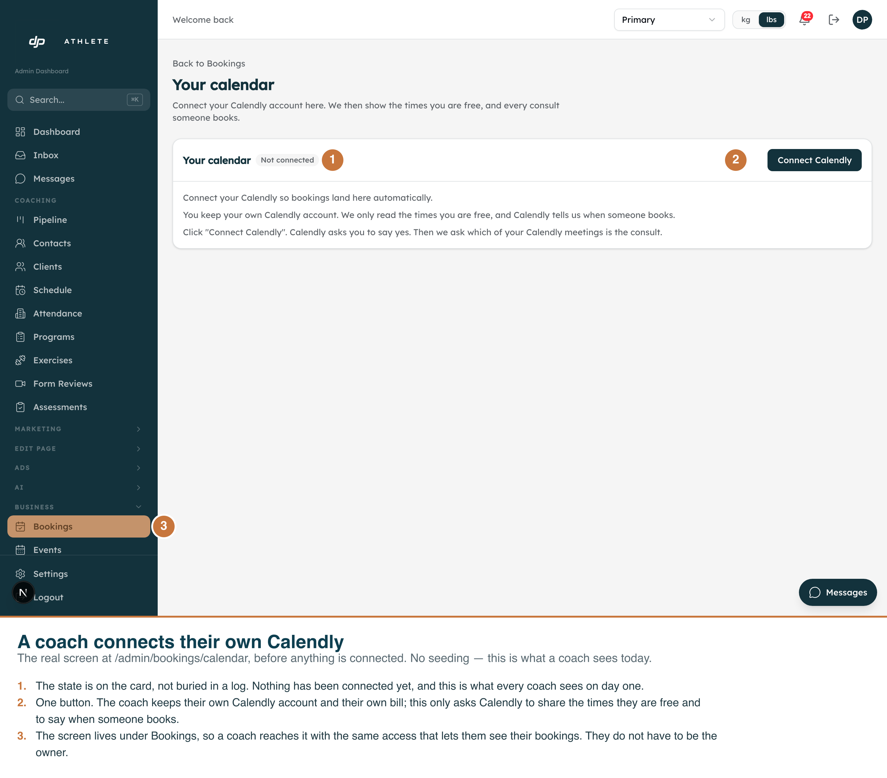
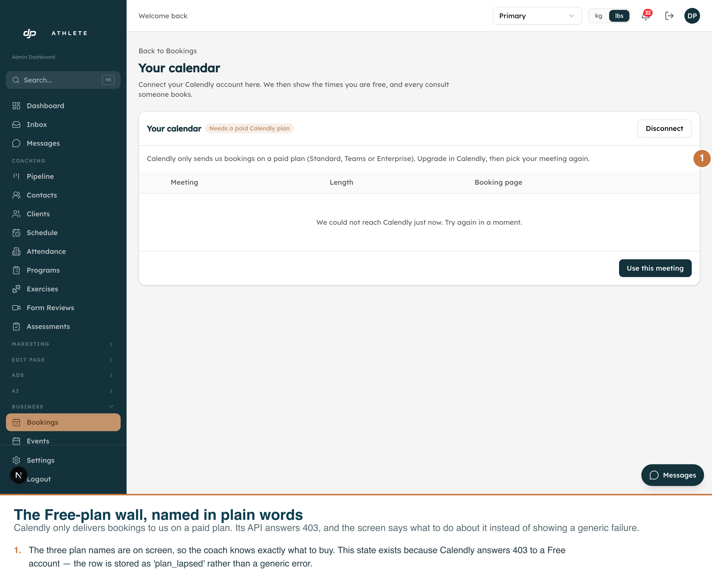
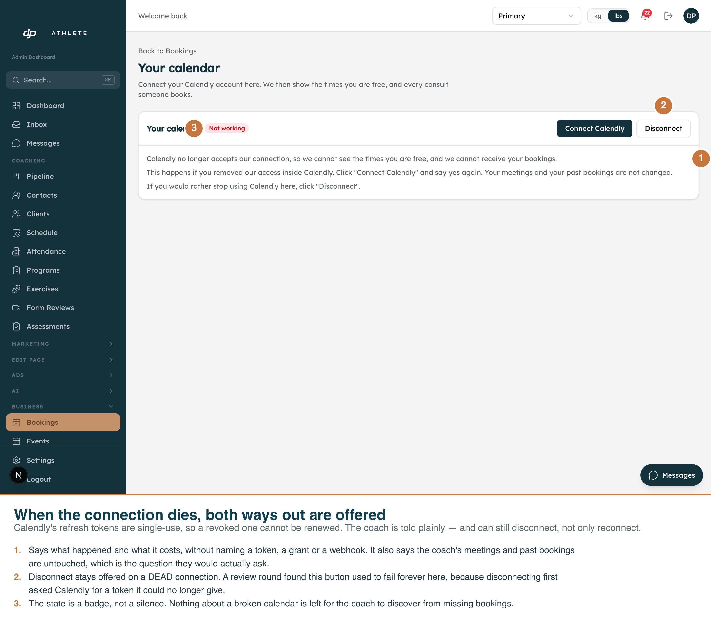

Three states of /admin/bookings/calendar, captured against the real running app on the real route, signed in as the real dev-clone operator. Annotations are burned into each PNG. Captured 2026-09-05.
The two happy-path states — connected but no meeting picked, and
connected with a meeting — both make live Calendly API calls while the page renders:
GET /users/me for the account name and email, and GET /event_types
for the meeting list. Reaching them needs a real Calendly OAuth application
(CALENDLY_CLIENT_ID and CALENDLY_CLIENT_SECRET), and no such
application exists in any environment yet. Creating one is an owner action.
Seeding a fake connection row would render the degraded variant of those states, with both Calendly reads failing — a picture of an error dressed up as a success. So they are reported as not captured rather than faked.
The three states below are honest: each renders from the database row alone. After the fix in
f7ddf104 the page only calls Calendly when the row is connected or
error, so plan_lapsed and needs_reconnect make no network
call at all — which is exactly why they can be shown truthfully here.

The true out-of-the-box state, with no seeding whatsoever: the dev clone has a booking host for the Primary business and no connection row, so this is what a coach sees on day one.
The screen sits under Bookings deliberately. That prefix maps to the schedule
permission, so a coach reaches it themselves — which is the whole point, since the owner's
decision is that each coach owns and pays for their own Calendly account. Putting it under
/admin/businesses would have made it owner-only.

Calendly only delivers bookings to us on a paid plan; its API answers 403 to a
Free account when we try to register for booking notifications. Migration 00240
anticipated this with a plan_lapsed status, and the screen names
Standard, Teams or Enterprise so the coach knows exactly what to buy — instead of a
generic failure they cannot act on.
The meeting picker below the message is intentional: the copy says "pick your meeting again", and re-picking is what retries the registration. The "we could not reach Calendly" row inside it is the honest consequence of there being no real Calendly credentials here yet.

Calendly's refresh tokens are single-use, so a revoked one cannot be renewed. The coach is told what happened and what it costs, without the words token, grant or webhook, and is reassured that their meetings and past bookings are untouched.
Marker 2 is the interesting one. Disconnect is still offered on a dead connection. It used to fail forever here — disconnecting asked Calendly for a token it could no longer give — which a review round caught and a later round fixed by splitting on fault class: an authentication rejection completes the disconnect locally and records the orphaned subscription, while a network fault still stops and asks the coach to retry.